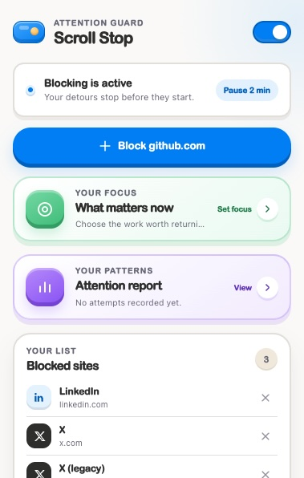
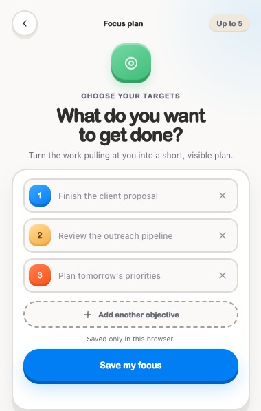
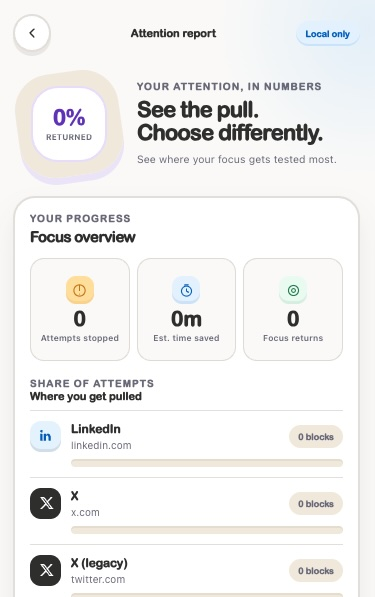

Set your focus
Add as many objectives as you need. They stay private in your browser.
Unlimited goalsOpen source. Local only. Yours.
Block the websites that pull you in, bring your goals back at the exact moment attention drifts, and see how often you choose focus instead.
Chrome extension

100%local Chrome storage
Any sitegets its own reminder
Unlimitedfocus objectives
MITopen-source license
A gentler guardrail
Scrolling Stop adds just enough friction to help your intentional choice win.
Add as many objectives as you need. They stay private in your browser.
Unlimited goalsOpen a blocked site and your own plan appears before the scroll can begin.
Site-specific copyTrack blocked attempts, estimated time saved, and returns to your focus.
Local analyticsThe useful interruption
When Reddit, LinkedIn, X, or any custom site pulls you away, Scrolling Stop names that exact site and shows the work you said mattered.
Scroll stopped
Your focus
You said you would:Inside the extension
A compact Chrome UI with clear actions, calm color, and no account setup.


Built in the open
The complete source, install skill, automated tests, and contribution guide are public. There are no API keys, subscriptions, or remote analytics.
Your next tab can wait
Download Scrolling Stop, set your focus, and make the next detour intentional.
Version 1.5.1 · Chrome 120+ · MIT licensed